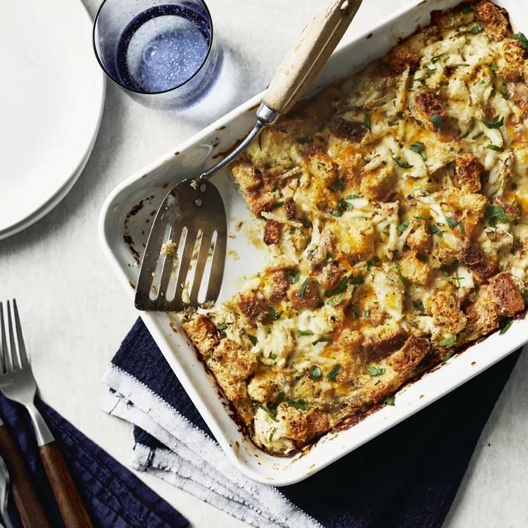

Crab Brunch Casserole

Experience pure delight with our Crab Brunch Casserole. This mouthwatering dish blends succulent crab meat with fresh ingredients.
The creamy texture, zesty spices, and golden-brown crust create a perfect harmony of flavors.
Ideal for gatherings or lazy weekends, it's a convenient and gourmet option.
Elevate your taste buds with the essence of the ocean and the richness of the land in every savory bite.
Ingredients
- 2 eggs, beaten
- 2 cups milk
- 2 cups seasoned croutons
- 8 ounces shredded Cheddar cheese
- 1 tablespoon dried minced onion
- 1 tablespoon dried parsley
- 1 pound fresh crabmeat
- salt and pepper to taste
- ¼ cup grated Parmesan cheese
Directions
Step 1:
-
Preheat oven to 325 degrees F (165 degrees C).
Lightly grease a medium baking dish.
Step 2:
-
In large bowl, mix the eggs, milk, croutons, cheese, onion, and parsley.
Stir in the crabmeat. Season with salt and pepper.
Spoon into the prepared baking dish, and sprinkle with Parmesan cheese.
Step 3:
-
Bake 1 hour in the preheated oven,
or until a knife inserted into center of the casserole comes out clean.
Serve immediately.
Tips
-
Use high-quality, fresh crab meat for the best flavor and texture.
If possible, opt for lump crab meat, as it offers larger, succulent pieces.
-
Enhance the flavors by using a balanced mix of spices and herbs.
Consider incorporating a dash of Old Bay seasoning, garlic powder,
and a pinch of cayenne pepper for a zesty kick.
-
Consider garnishing the finished casserole with fresh chopped parsley or green onions for a pop of color and a burst of freshness.
Main Page